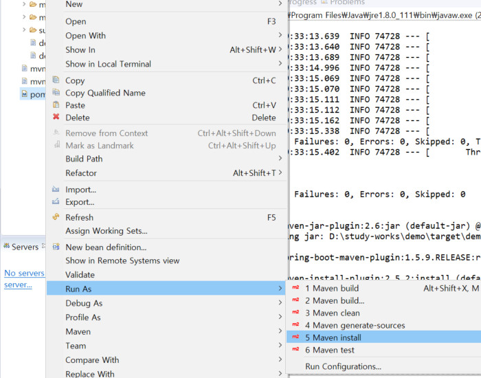
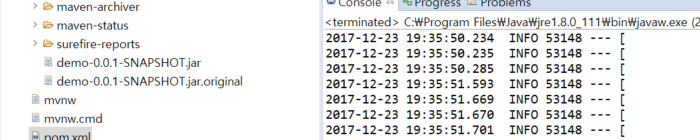
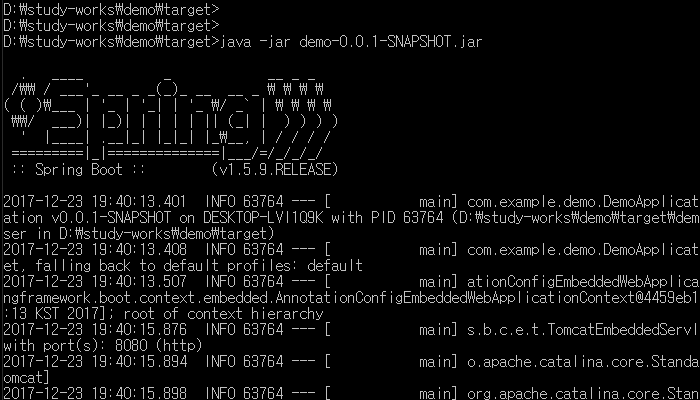

Jar 배포
Jar 배포시 /WEB-INF/jsp폴더의 jsp파일이 포함되지 않아 404에러가 발생한다. jsp를 사용할 경우 war로 배포하자.(해결방법도 있음)
pom.xml파일을 선택한 뒤에 마우스 오른쪽 버튼 -> Run As -> Maven install을 실행한다.

target폴더에 아래와 같이 .jar파일이 생성된다.

커맨드 창을 열어 java -jar 파일명.jar명령을 실행하면 아래와 같이 실행된다.

커맨드 창에서 서버 실행시 포트를 변경하고 싶으면 --server.port=포트번호를 추가하여 실행하면 된다.
java -jar ondocCrm-0.0.1-SNAPSHOT.jar --server.port=8080